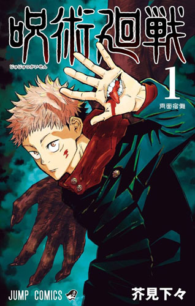

JUJUTSU KAISEN (MANGA)
Información general
El manga de Jujutsu Kaisen fue creado por Gege Akutami y comenzó a publicarse el 5
de marzo de 2018 en la revista Weekly Shōnen Jump. Desde sus primeros capítulos, se caracterizó por su tono oscuro,
su ritmo rápido y su estilo de combate estratégico. A diferencia del anime, el manga aborda de forma más cruda y explícita el
dolor, la muerte y la desesperanza.
Arcos destacados del manga
- Arco del Incidente de Shibuya: Uno de los puntos de quiebre de la historia. Aquí se producen muertes clave,
batallas intensas y cambios irreversibles para los protagonistas.
- Arco del Culling Game (Juego de la Eliminación): Una especie de torneo mortal donde los personajes se enfrentan
a nuevas reglas, enemigos despiadados y dilemas éticos complejos.
- Arco Final (actual): El manga se encuentra en su fase final, con enfrentamientos entre los hechiceros más poderosos,
revelaciones impactantes sobre el pasado y el verdadero propósito de Sukuna y Kenjaku.
Desarrollo de personajes
A lo largo del manga, varios personajes sufren grandes transformaciones:
- Yuji Itadori: Pasa de ser un chico optimista a un guerrero marcado por el sacrificio y la culpa.
- Megumi Fushiguro: Su historia familiar y el legado del clan Zenin lo llevan a una evolución inesperada y trágica.
- Maki Zenin: Se convierte en uno de los personajes más poderosos tras un giro drástico en su historia, cortando vínculos
con su clan.
- Yuta Okkotsu: Introducido en la precuela, cobra gran protagonismo en el manga principal como hechicero de nivel especial.
Temas del manga
El manga toca temas más oscuros y filosóficos que el anime:
- La muerte: Es constante, impredecible y muchas veces repentina, incluso para personajes principales.
- La moral gris: No hay héroes o villanos absolutos. Todos los personajes enfrentan dilemas éticos y decisiones cuestionables.
- La carga del poder: El manga cuestiona si tener poder justifica el sufrimiento ajeno y qué significa realmente "proteger a otros".
Momentos impactantes (sin spoilers directos)
El manga de Jujutsu Kaisen es conocido por sus giros de trama brutales, muertes inesperadas, traiciones y revelaciones que cambian completamente
la visión que se tiene de ciertos personajes. Gege Akutami no teme eliminar personajes importantes o romper la fórmula clásica del shōnen.
Estilo de dibujo y narrativa
El estilo de dibujo de Akutami ha evolucionado notablemente, pasando de trazos más sueltos a escenas de acción complejas y dramáticas.
Además, la narrativa se caracteriza por tener múltiples capas, cambios de ritmo abruptos y simbolismos visuales.
Datos adicionales
- El manga tiene una precuela titulada Jujutsu Kaisen 0, protagonizada por Yuta Okkotsu.
- Gege Akutami ha confirmado que el manga está entrando en su tramo final.
- La obra ha vendido más de 80 millones de copias en todo el mundo hasta 2025.
- Muchos momentos clave del manga aún no han sido animados, por lo que los lectores tienen ventaja en cuanto a la trama completa.
¿Dónde leer el manga?
Se puede leer oficialmente en español e inglés a través de plataformas como MANGA Plus de Shueisha y
VIZ Media. Algunos capítulos están disponibles de forma gratuita y legal desde el lanzamiento.
Primeros tomos

|

|

|